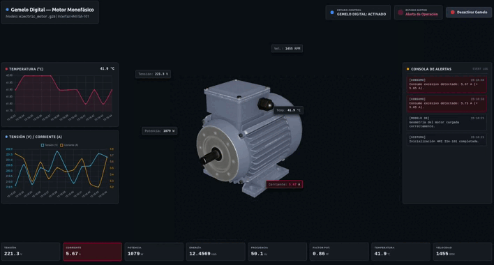
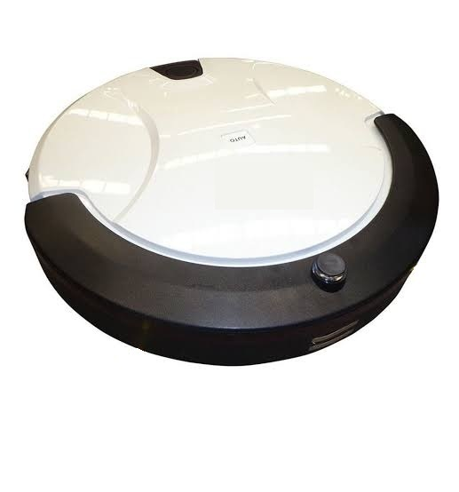
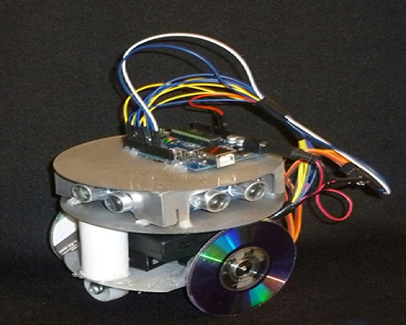
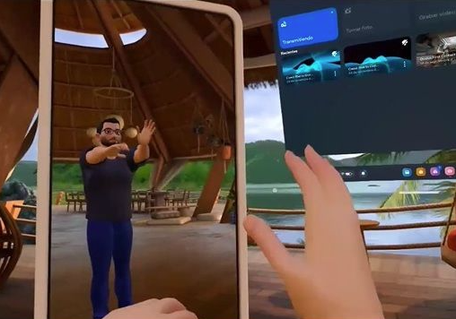
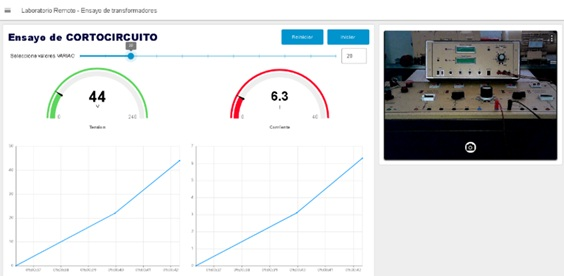
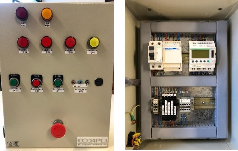
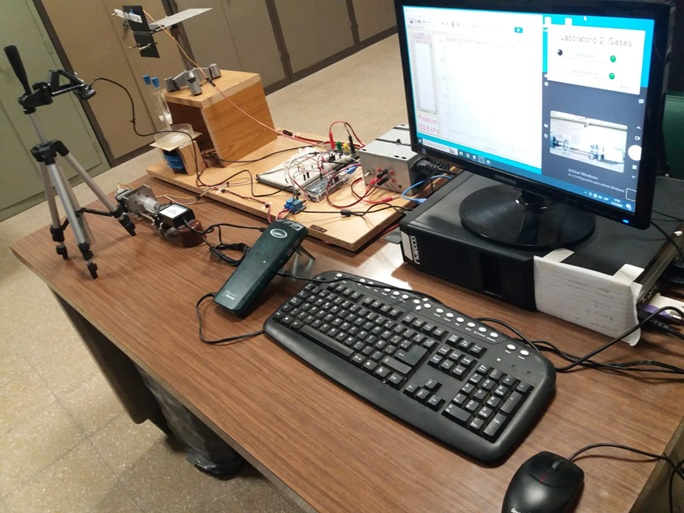
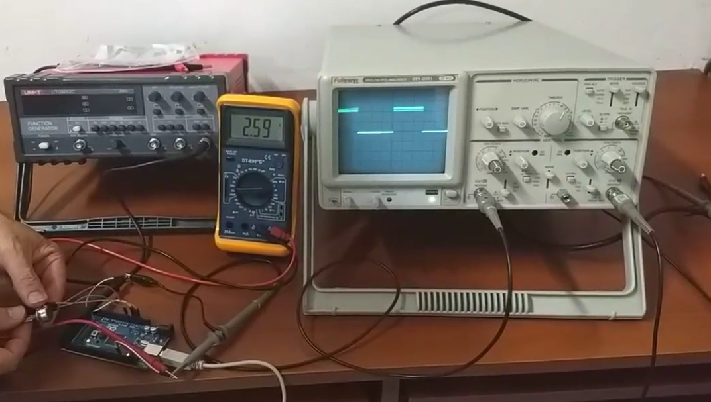

Especialista en infraestructuras críticas industriales, entornos Industria 4.0, ciberseguridad industrial OT, IoT, IIoT, Gemelos digitales industriales, Embodied AI & Physical AI, arquitecturas distribuidas SCADA/PLC/DCS/HMI y analítica avanzada basada en Datawarehouse corporativos. Desarrollo complejo, análisis funcional y técnico, y liderazgo de equipos de desarrollo y helpdesk. Docente e Investigador Universitario
Director del proyecto estratégico: "Remotización de Sistemas de Monitoreo y Comando en experiencias con máquinas eléctricas".
Profesor en la carreras de Ingenieria en Sistemas - Ingeniería Industrial - Ingenieria Eléctrica.
En curso (2026) "Optimización Prescriptiva de Sistemas Industriales Complejos mediante la Integración de Modelos de Primeros Principios y Gemelos Digitales en Capas de Supervisión"
En curso (2025) "Desarrollo de un Gemelo Digital basado en datos para la detección temprana de anomalías en motores eléctricos monofásicos industriales"
Graduado con enfoque en el desarrollo e integración de sistemas complejos.
Formación pedagógica orientada a la educación en ciencias e ingeniería (2016 - 2018).
Docencia de Grado en Ingeniería
Especialización
EducacionIT (Instructor Experto)
UDC y UTN de La Plata fortalecen formación práctica en Redes, Enfermería y Terapia Ocupacional
Leer NotaIA, Ciberseguridad, IoT, reflexiones sobre el mercado laboral en estos temas.
Escuchar EpisodioLos principios de la Ciberseguridad, impacto, tipos de riesgo, normas y procesos de gestión, los hackers y vulnerabilidades e IA.
Escuchar EpisodioExpositor "Aplicaciones con software/hardware libre: robótica, domótica y control de variables físicas".
Ciclo Especiales Diario HOY – Casas Inteligentes.
Ver VideoRobot autónomo que recorre un laberinto.
Leer Nota> Investigador Cat. D (2020) - UTN - Centro Investigación, Desarrollo e Innovación CODAPLI
Remotización de Sistemas de Monitoreo y Comando en experiencias con máquinas eléctricas.
Desarrollos relacionados a los temas energéticos, que ayudan en el camino de transformación a ciudades inteligentes.
Codiseño aplicado con redes de sensores inalámbricos en tiempo real.
Estudio y modelización de equipos, para la valoración de la fatiga en mezclas asfálticas, incluidos en la actual normativa europea.
DISEÑO DE BOMBAS DE INFUSIÓN DE INSULINA INTELIGENTES.
Valoración del desempeño de modelos de soluciones viales a nivel de calzada para la conducción segura bajo condición de escasa visibilidad por niebla.
CODAPLI: Laboratorios Virtuales y Remotos.

Despliegue de hardware para captura de datos, modelado matemático del Gemelo Digital e interfaz de usuario, alarmas y objetos 3D.

Desarrollo que incluye la adecuación de hardware y desarrollo de software para el despliegue de algoritmos bajo ROS2

PoC - Desarrollo del hardware y acciones de control en un robot diferencial para que tome acciones en base al contexto del chat sin indicarle acciones concretas

Desarrollo de interfaces de Realidad Virtual en Oculus Quest 2

Desarrollo de hardware de adquisición de datos e interfaz de usuario para laboratorio de ensayos de Cortocircuito de Transformadores

Desarrollo equipamiento para pruebas de programas de PLC en clase, en laboratorio e integración con Laboratorios remotos para pruebas via internet

Desarrollo e implementación de hardware y software para una plataforma de practicas remotas sobre dispositivos fisicos

Desarrollo del hardware y acciones de control para prueba de PoC de una bomba de infusión de insulina para personas con diabetes tipo 2